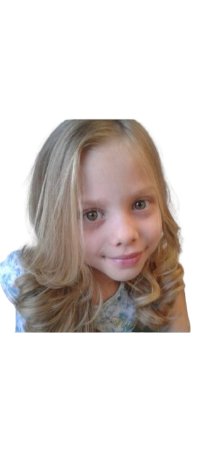
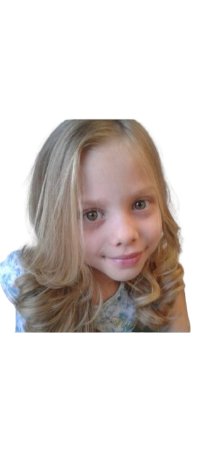

Este portfólio acadêmico foi desenvolvido com o objetivo de reunir, refletir e apresentar minha trajetória de aprendizagem ao longo do período letivo. Através dos trabalhos, atividades e experiências aqui registradas, é possível observar não apenas o conteúdo abordado nas disciplinas, mas também meu desenvolvimento pessoal, acadêmico e profissional. Durante este ciclo, tive a oportunidade de aprofundar meus conhecimentos teóricos e práticos, enfrentar desafios, colaborar com colegas e professores, e aplicar conceitos aprendidos em situações reais e simuladas. Cada atividade selecionada neste portfólio representa um passo importante nesse processo de formação.Além de evidenciar o conhecimento adquirido, este portfólio reflete meu comprometimento com a construção do saber, minha capacidade de análise crítica e minha evolução como estudante e futuro profissional.
 
